第 27 章
认识物件侦测原理与资源档案
Cascade Classifier · Haar-like Features · OpenCV Haarcascades XML · 人脸、眼睛、身体、猫脸与车牌侦测
人脸辨识是计算机技术的一种，这个技术可以测出人脸在图像中的位置，同时也可以找出多个人脸，在检测过程中基本上会忽略背景或其他物体。OpenCV 有提供一系列训练测试过的资源档，这些资源档可以让我们用很简单的指令完成人脸、眼睛、身形、上半身、下半身、猫脸、车牌等检测。
27-1
物件侦测原理
在正式进入 AI 视觉的热门主题人脸辨识前，首先要判断目前的图像是否存在人脸，当图像存在人脸后，才可以更进一步分析此人脸是谁。
27-1-1 阶层分类器原理
Cascade Classifier 可以翻译为阶层式分类器，或是称级联分类器。这个分类器的基本原理是使用排除法，从简单开始逐步排除不符合的检测样本，经过多次检测后，最后所得到的符合我们所选的样本，又称此为正样本。
例如：假设要检测样本是否是猫，首先可以检测样本是否有 4 条腿，如果样本没有 4 条腿，则排除此样本，又称此为负样本。下一步可以检测是否有尾巴，如果没有尾巴的物件又可以排除。
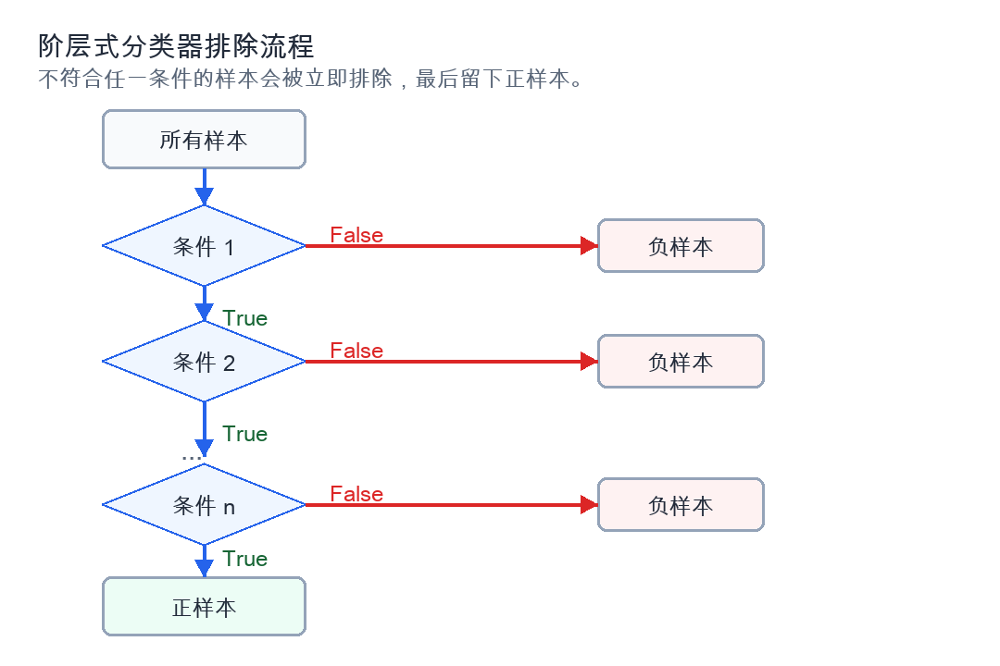
阶层式分类器依序检查条件，未通过即归为负样本，最后留下正样本。
27-1-2 Haar 特征缘由
Haar-like features 中文翻译是哈尔特征，这是用于物体辨识的数位图像特征，这个名称是来自匈牙利科学家 Alfred Haar。基础原理是使用遮罩（mask）在图像内滑动，同时计算特征值。
OpenCV 所支援的层次式分类器所采用的演算法是 2001 年 Paul Viola 和 Michael Jones 的论文 Rapid Object Detection using a Boosted Cascade of Simple Features。这是一种机器学习的演算法，阶层函数是从大量的正样本图像和负样本图像中训练出来，然后用来检测其他图像的物件。
27-1-3 哈尔特征原理
现在假设使用人脸识别为例，最初需要大量的正样本图像（人脸图像）和负样本图像（没有人脸的图像）训练分类器，计算特征值的方法采用下列 Haar 特征说明。
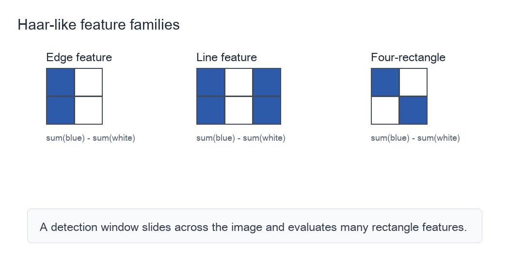
Edge Features、Line Features、Four-rectangle Features 的示意。
每个特征点计算方式是黑色（书中使用蓝色绘制）部分像素总和减去白色部分的像素总和。假设一张图像使用 24 x 24 的感兴趣区块也会产生超过 160000 个特征值。为了解决这个庞大的计算，Paul Viola 和 Michael Jones 导入积分图像的观念，不论图像多大，会将特征值的计算减到只有涉及 4 个像素点的操作。
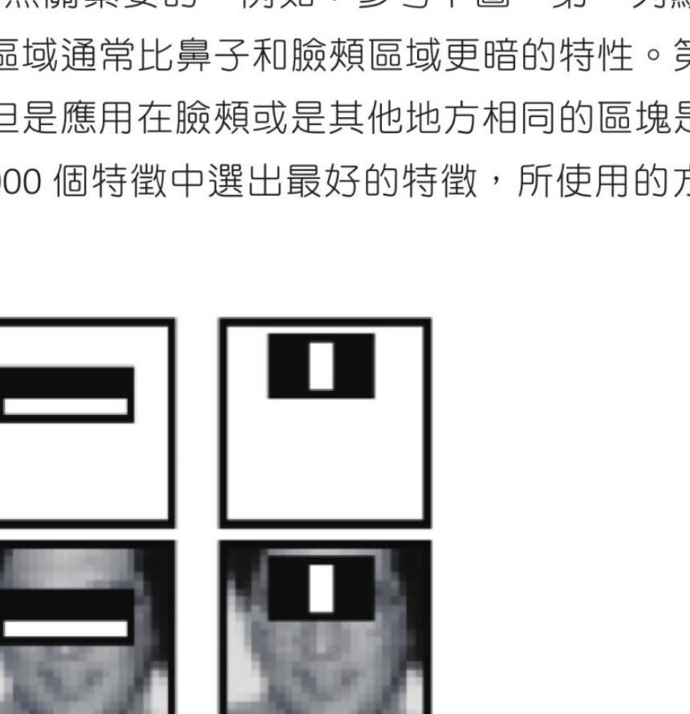
图片来源：OpenCV 官方网站。书中用此图说明眼睛区域通常比鼻子和脸颊区域更暗。
在 Paul Viola 和 Michael Jones 的论文中，即使是 200 个特征也可以提供约 95% 的准确率，最终他们设定了 6000 个特征，所以所需计算的特征一下子从 160000 减少到 6000 个特征。作者的检测器有 6000 多个特征，分成 38 个阶段，前五个阶段有 1、10、25、25 和 50 个特征。
27-2
找寻 OpenCV 的资源档案来源
OpenCV 安装成功后，可以在所安装资料夹的内看到这些资源档，以笔者的 Python 3.85 为例，可以在下列资料夹看到资源档案。
~\Python38-32\Lib\site-packages\cv2\data
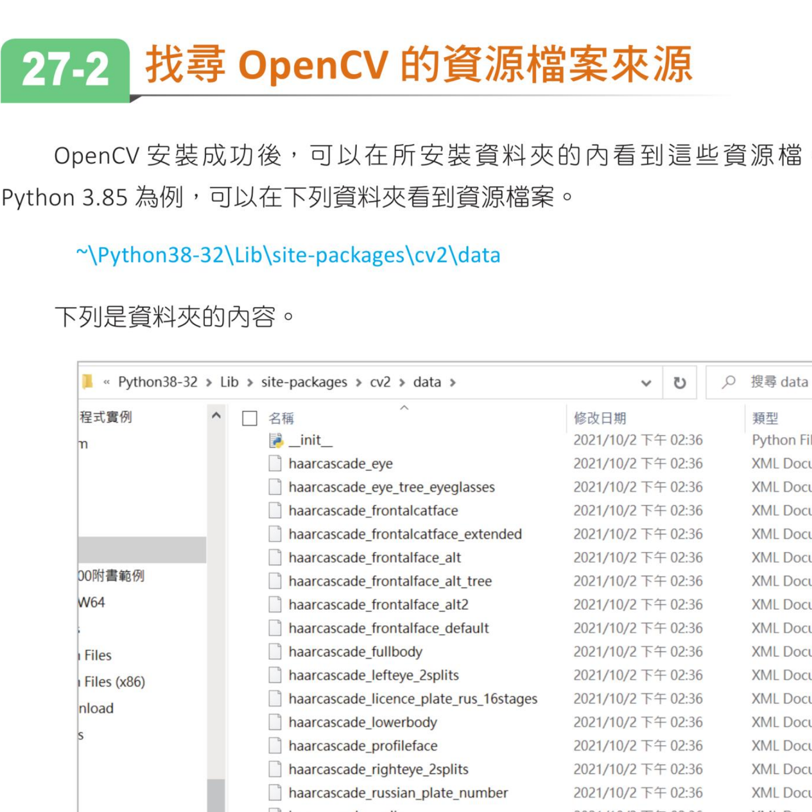
本机 OpenCV 安装目录中的 cv2\data 资源档案。
不同版本的 Python，可能路径有差异。若找寻不到上述资料夹，也可以到 OpenCV 的 GitHub 资源托管平台下载。
https://github.com/opencv/opencv/tree/master/data/haarcascades
OpenCV GitHub 上的 data/haarcascades 目录。
27-3
认识资源档案
每个 XML 档案就是一种已经使用哈尔（Haar featured）特征训练好的分类器，又可以称阶层式分类器档案，每个分类器可以使用在不同物件的侦测。
| 分类器档案名称 | 侦测内容 |
|---|
| haarcascade_eye.xml | 眼睛 |
| haarcascade_eye_tree_eyeglasses.xml | 戴眼镜的眼睛 |
| haarcascade_frontalcatface.xml | 正面的猫脸 |
| haarcascade_frontalcatface_extended.xml | 扩充版正面的猫脸 |
| haarcascade_frontalface_alt.xml | 侦测正面人脸 |
| haarcascade_frontalface_alt_tree.xml | 侦测正面人脸 |
| haarcascade_frontalface_alt2.xml | 侦测正面人脸 |
| haarcascade_frontalface_default.xml | 侦测正面的人脸 |
| haarcascade_fullbody.xml | 侦测身形 |
| haarcascade_lefteye_2splits.xml | 侦测左眼 |
| haarcascade_lowerbody.xml | 侦测下半身 |
| haarcascade_profileface.xml | 侦测侧面的人脸 |
| haarcascade_righteye_2splits.xml | 侦测右眼 |
| haarcascade_russian_plate_number.xml | 侦测车牌 |
| haarcascade_smile.xml | 侦测笑脸，注：测试效果不佳。 |
| haarcascade_upperbody.xml | 侦测上半身 |
为了方便使用资源档，笔者已经将资源档案改存至 C:\opencv\data 资料夹，所以本章所有实例皆需参考该资料夹。
27-4
人脸的侦测
27-4-1 脸形阶层式分类器资源档
在阶层式分类器资源档中与正面脸形分类有关的有下列 4 个档案。
haarcascade_frontalface_alt.xmlhaarcascade_frontalface_alt_tree.xmlhaarcascade_frontalface_alt2.xmlhaarcascade_frontalface_default.xml
27-4-2 基础脸形侦测程式
这一节的目的是可以让程式使用 OpenCV 将图像档案的人脸标记出来，首先可以使用 CascadeClassifier() 类别下载侦测脸形的分类器资源档。
pictPath = r'C:\opencv\data\haarcascade_frontalface_default.xml'
face_cascade = cv2.CascadeClassifier(pictPath)
接著需要使用辨识物件启动 detectMultiScale() 方法，语法如下：
faces = face_cascade.detectMultiScale(img, scaleFactor, minNeighbors, minSize, maxSize)
| 参数 | 意义 |
|---|
| img | 要辨识的图像档案。 |
| scaleFactor | 若没有指定一般是 1.1，主要是指在特征比对中，图像比例的缩小倍数；必须大于 1.0。 |
| minNeighbors | 每个区块的特征皆会比对，设定多少个特征数达到才算匹配成功，预设值是 3。 |
| minSize | 可选参数，最小辨识区块，小于此将被忽略。 |
| maxSize | 可选参数，最大的辨识区块，大于此将被忽略。 |
最常见的是设定前 3 个参数，例如下列表示图像物件是 img，scaleFactor 是 1.1，minNeighbors 是 3。
faces = face_cascade.detectMultiScale(img, 1.1, 3)
上述执行成功后的回传值是 faces 串列，串列的元素是元组（tuple），每个元组内有 4 组数字分别代表脸部左上角的 x 轴座标、y 轴座标、脸部的宽 w 和脸部的高 h。我们可以用 len(faces) 获得找到几张脸。
程式实例 ch27_1.py：标示图像中的人脸与找到的人脸数量
# ch27_1.py
import cv2
pictPath = r'C:\opencv\data\haarcascade_frontalface_default.xml'
face_cascade = cv2.CascadeClassifier(pictPath) # 建立辨识物件
img = cv2.imread("jk.jpg") # 读取图像
faces = face_cascade.detectMultiScale(img, scaleFactor=1.1,
minNeighbors = 3, minSize=(20,20))
# 标注右下角底色是黄色
cv2.rectangle(img, (img.shape[1]-140, img.shape[0]-20),
(img.shape[1],img.shape[0]), (0,255,255), -1)
# 标注找到多少的人脸
cv2.putText(img, "Finding " + str(len(faces)) + " face",
(img.shape[1]-135, img.shape[0]-5),
cv2.FONT_HERSHEY_COMPLEX, 0.5, (255,0,0), 1)
# 将人脸框起来，由于有可能找到好几个脸所以用回圈绘出来
for (x,y,w,h) in faces:
cv2.rectangle(img, (x,y), (x+w,y+h),(255,0,0),2) # 蓝色框住人脸
cv2.imshow("Face", img) # 显示图像
cv2.waitKey(0)
cv2.destroyAllWindows()
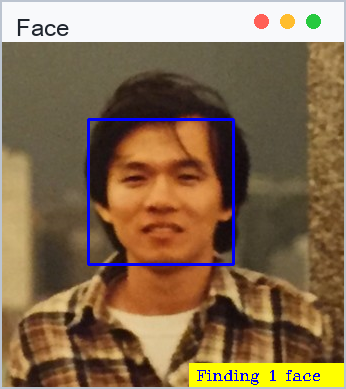
使用 jk.jpg 侦测出 1 张人脸。
程式实例 ch27_2.py：使用 g5.jpg 辨识多张人脸的图像
# ch27_2.py
import cv2
pictPath = r'C:\opencv\data\haarcascade_frontalface_default.xml'
face_cascade = cv2.CascadeClassifier(pictPath) # 建立辨识物件
img = cv2.imread("g5.jpg") # 读取图像
faces = face_cascade.detectMultiScale(img, scaleFactor=1.1,
minNeighbors = 3, minSize=(20,20))
cv2.rectangle(img, (img.shape[1]-140, img.shape[0]-20),
(img.shape[1],img.shape[0]), (0,255,255), -1)
cv2.putText(img, "Finding " + str(len(faces)) + " face",
(img.shape[1]-135, img.shape[0]-5),
cv2.FONT_HERSHEY_COMPLEX, 0.5, (255,0,0), 1)
for (x,y,w,h) in faces:
cv2.rectangle(img, (x,y), (x+w,y+h),(255,0,0),2)
cv2.imshow("Face", img)
cv2.waitKey(0)
cv2.destroyAllWindows()
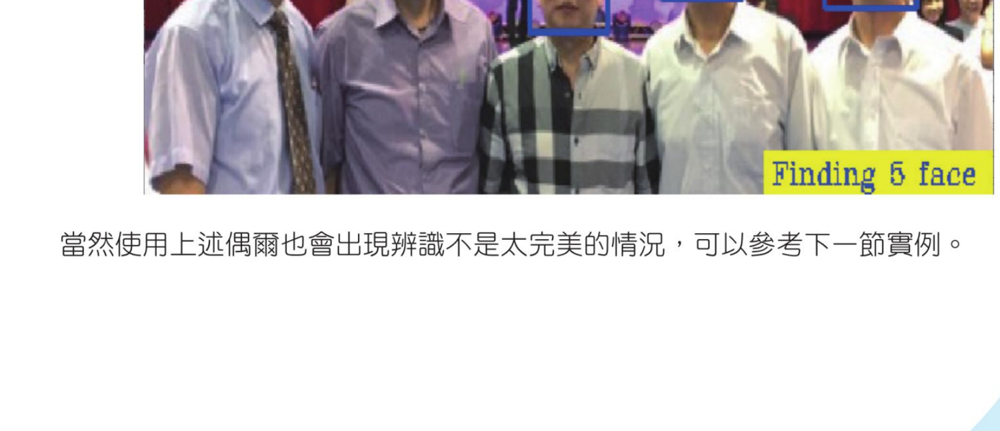
多人脸图像执行结果，右下角标示 Finding 5 face。
当然使用上述偶尔也会出现辨识不是太完美的情况，可以参考下一节实例。
27-4-3 史上最牛的物理科学家合照
在脸形检测过程，如果有多人合照时，难免也会有一些不可预期的结果产生。下列可能是当今科学界最火热的一张照片，1927 年世界著名科学家在比利时布鲁塞尔参加索维尔（Solvay）会议的合照，图片下方最中间的是爱因斯坦，下图共有 29 位科学家，其中 17 位是诺贝尔奖得主。
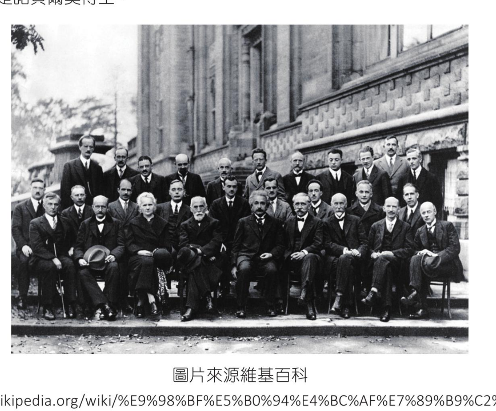
图片来源维基百科：Solvay conference 1927。
程式实例 ch27_3.py：使用 solvay1927.jpg 图像侦测人脸
# ch27_3.py
import cv2
pictPath = r'C:\opencv\data\haarcascade_frontalface_default.xml'
face_cascade = cv2.CascadeClassifier(pictPath)
img = cv2.imread("solvay1927.jpg")
faces = face_cascade.detectMultiScale(img, scaleFactor=1.1,
minNeighbors = 3, minSize=(20,20))
for (x,y,w,h) in faces:
cv2.rectangle(img, (x,y), (x+w,y+h),(255,0,0),2)
cv2.imshow("Face", img)
cv2.waitKey(0)
cv2.destroyAllWindows()
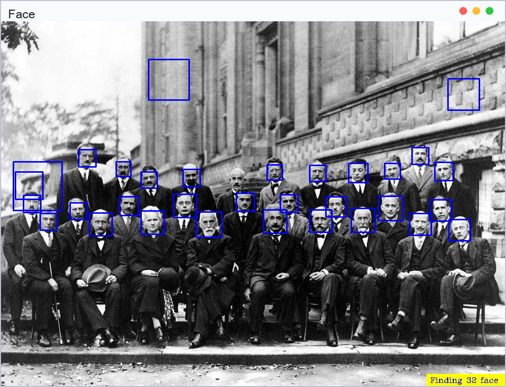
虽然 29 位科学家侦测到了 28 位，但也虚增了 4 个非人脸框。
程式实例 ch27_3_1.py：将 minNeighbors 改为 5
# ch27_3_1.py
import cv2
pictPath = r'C:\opencv\data\haarcascade_frontalface_default.xml'
face_cascade = cv2.CascadeClassifier(pictPath)
img = cv2.imread("solvay1927.jpg")
faces = face_cascade.detectMultiScale(img, scaleFactor=1.1,
minNeighbors = 5, minSize=(20,20))
for (x,y,w,h) in faces:
cv2.rectangle(img, (x,y), (x+w,y+h),(255,0,0),2)
cv2.imshow("Face", img)
cv2.waitKey(0)
cv2.destroyAllWindows()
scaleFactor 是控制变数，如果更改为比较大可以减少检测的图像，不过这也会造成部分资料没有检测出来。
程式实例 ch27_4.py：改用 haarcascade_frontalface_alt.xml
# ch27_4.py
import cv2
pictPath = r'C:\opencv\data\haarcascade_frontalface_alt.xml'
face_cascade = cv2.CascadeClassifier(pictPath)
img = cv2.imread("solvay1927.jpg")
faces = face_cascade.detectMultiScale(img, scaleFactor=1.1,
minNeighbors = 3, minSize=(20,20))
for (x,y,w,h) in faces:
cv2.rectangle(img, (x,y), (x+w,y+h),(255,0,0),2)
cv2.imshow("Face", img)
cv2.waitKey(0)
cv2.destroyAllWindows()
使用 haarcascade_frontalface_alt.xml 后，人脸侦测改善许多。
程式实例 ch27_4_1.py：设定 maxSize=(50,50)
pictPath = r'C:\opencv\data\haarcascade_frontalface_alt.xml'
face_cascade = cv2.CascadeClassifier(pictPath) # 建立辨识物件
img = cv2.imread("solvay1927.jpg") # 读取图像
faces = face_cascade.detectMultiScale(img, scaleFactor=1.1,
minNeighbors = 3, minSize=(20,20),
maxSize=(50,50))
程式实例 ch27_5.py：使用 haarcascade_frontalface_alt2.xml
pictPath = r'C:\opencv\data\haarcascade_frontalface_alt2.xml'
face_cascade = cv2.CascadeClassifier(pictPath) # 建立辨识物件
img = cv2.imread("solvay1927.jpg") # 读取图像
faces = face_cascade.detectMultiScale(img, scaleFactor=1.1,
minNeighbors = 3, minSize=(20,20),
maxSize=(50,50))
程式实例 ch27_6.py：使用 haarcascade_frontalface_alt_tree.xml
# ch27_6.py
import cv2
pictPath = r'C:\opencv\data\haarcascade_frontalface_alt_tree.xml'
face_cascade = cv2.CascadeClassifier(pictPath)
img = cv2.imread("solvay1927.jpg")
faces = face_cascade.detectMultiScale(img, scaleFactor=1.1,
minNeighbors = 3, minSize=(20,20))
for (x,y,w,h) in faces:
cv2.rectangle(img, (x,y), (x+w,y+h),(255,0,0),2)
cv2.imshow("Face", img)
cv2.waitKey(0)
cv2.destroyAllWindows()
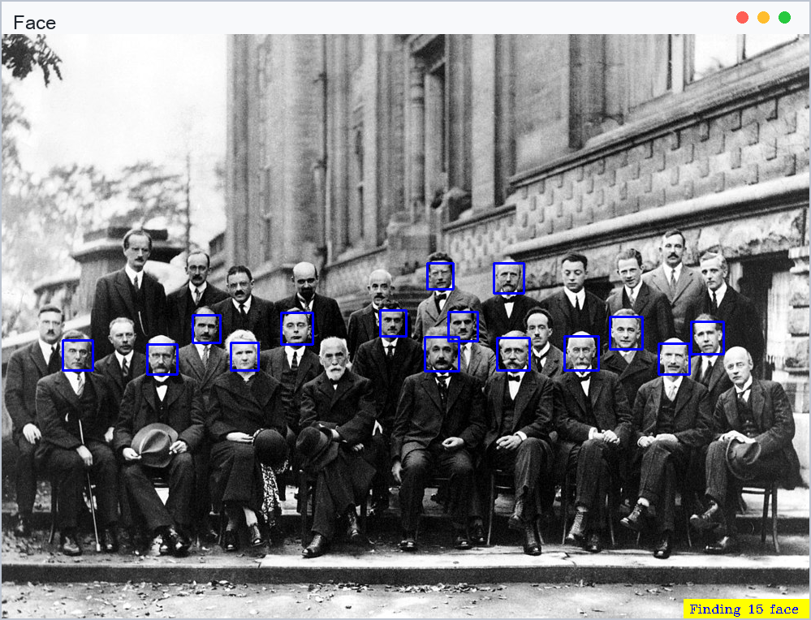
haarcascade_frontalface_alt_tree.xml 分类器则是有比较多人脸没有侦测到。
27-5
侦测侧面的人脸
27-5-1 基础观念
当一个人脸是侧面向著镜头时，使用 27-3 节正面的人脸分类器，许多时候是无法测出此人脸的。同样是 1927 年索维尔会议的合照，另有一张后排右边算起第 4 位，因为拍照时往右看，使用前一小节的方法无法侦测到。
程式实例 ch27_6_1.py：使用 s_1927.jpg 档案重新设计 ch27_4.py
pictPath = r'C:\opencv\data\haarcascade_frontalface_alt.xml'
face_cascade = cv2.CascadeClassifier(pictPath) # 建立辨识物件
img = cv2.imread("s_1927.jpg") # 读取图像
faces = face_cascade.detectMultiScale(img, scaleFactor=1.02,
minNeighbors = 3, minSize=(20,20))
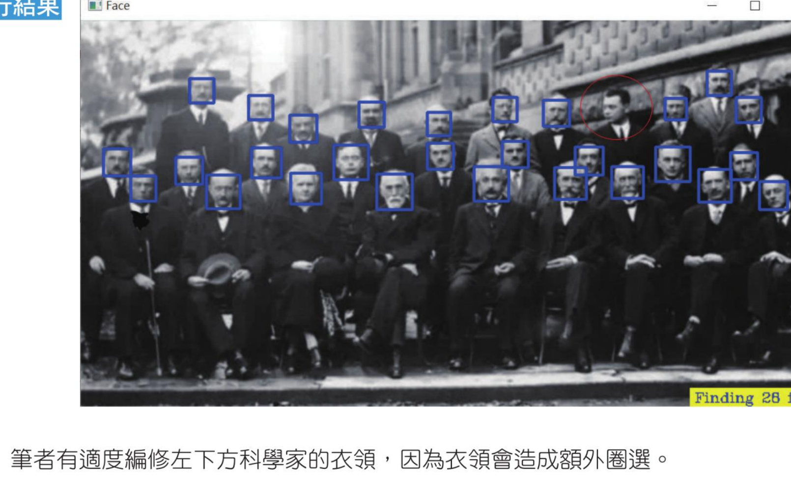
笔者有适度编修左下方科学家的衣领，因为衣领会造成额外圈选。
27-5-2 侧面脸形侦测
在阶层式分类器资源档中与侧面脸形分类有关的档案如下：
haarcascade_profileface.xml
程式实例 ch27_6_2.py：使用 haarcascade_profileface.xml 侦测侧面人脸
# ch27_6_2.py
import cv2
pictPath = r'C:\opencv\data\haarcascade_profileface.xml'
face_cascade = cv2.CascadeClassifier(pictPath) # 建立辨识物件
img = cv2.imread("s_1927.jpg") # 读取图像
faces = face_cascade.detectMultiScale(img, scaleFactor=1.3,
minNeighbors = 4, minSize=(20,20))
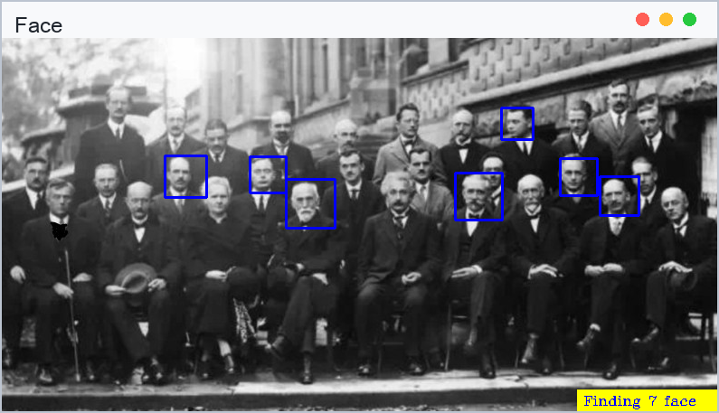
使用侧面人脸分类器的侦测结果。
27-6
路人侦测
虽然特征档案使用的英文是 fullbody，可以翻译为身体，这个分类器笔者感觉更类似追踪路人，因为近距离的图像无法侦测，远距离的图像比较可以侦测。
27-6-1 路人侦测
路人侦测的分类器档案是 haarcascade_fullbody.xml。
程式实例 ch27_7.py：路人侦测的应用
# ch27_7.py
import cv2
pictPath = r'C:\opencv\data\haarcascade_fullbody.xml'
body_cascade = cv2.CascadeClassifier(pictPath) # 建立辨识物件
img = cv2.imread("people1.jpg") # 读取图像
bodies = body_cascade.detectMultiScale(img, scaleFactor=1.1,
minNeighbors = 3, minSize=(20,20))
# 标注身体
for (x,y,w,h) in bodies:
cv2.rectangle(img, (x,y), (x+w,y+h),(255,0,0),2) # 蓝色框住身体
cv2.imshow("Body", img) # 显示图像
cv2.waitKey(0)
cv2.destroyAllWindows()
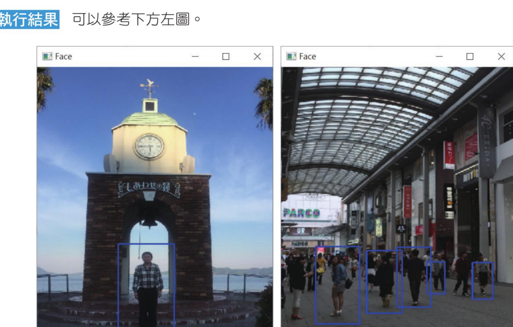
左图是 people1.jpg，右图是多人群聚路人的侦测结果。
程式实例 ch27_8.py：侦测多人群聚的路人
# ch27_8.py
import cv2
pictPath = r'C:\opencv\data\haarcascade_fullbody.xml'
body_cascade = cv2.CascadeClassifier(pictPath) # 建立辨识物件
img = cv2.imread("people2.jpg") # 读取图像
bodies = body_cascade.detectMultiScale(img, scaleFactor=1.1,
minNeighbors = 3, minSize=(20,20))
for (x,y,w,h) in bodies:
cv2.rectangle(img, (x,y), (x+w,y+h),(255,0,0),2)
cv2.imshow("Body", img)
cv2.waitKey(0)
cv2.destroyAllWindows()
经过测试，笔者感觉人潮不拥挤的路人侦测有比较好的效果，另外，如果是近距离的人像侦测效果也比较不好。
27-6-2 下半身的侦测
下半身侦测所使用的分类器档案是 haarcascade_lowerbody.xml。
程式实例 ch27_9.py：使用 haarcascade_lowerbody.xml
# ch27_9.py
import cv2
pictPath = r'C:\opencv\data\haarcascade_lowerbody.xml'
body_cascade = cv2.CascadeClassifier(pictPath) # 建立辨识物件
27-6-3 上半身的侦测
上半身侦测所使用的分类器档案是 haarcascade_upperbody.xml。
程式实例 ch27_10.py：使用 haarcascade_upperbody.xml
pictPath = r'C:\opencv\data\haarcascade_upperbody.xml'
body_cascade = cv2.CascadeClassifier(pictPath) # 建立辨识物件
bodies = body_cascade.detectMultiScale(img, scaleFactor=1.1,
minNeighbors = 9, minSize=(20,20))
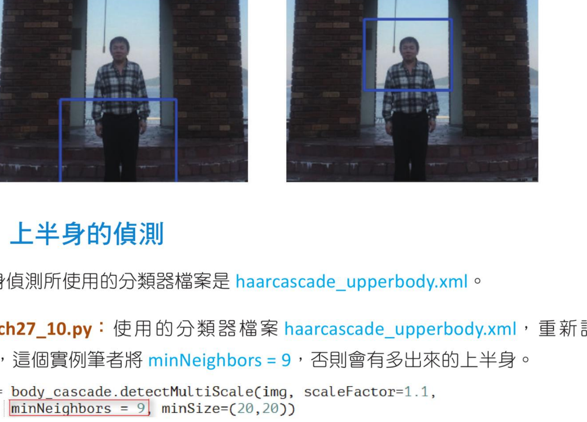
下半身与上半身侦测结果；上半身实例将 minNeighbors 设为 9。
27-7
眼睛的侦测
27-7-1 眼睛分类器资源档
在分类器资源档中与眼睛分类有关的有下列 3 个档案。
haarcascade_eye.xml：侦测双眼。haarcascade_lefteye_2splits.xml：侦测左眼。haarcascade_righteye_2splits.xml：侦测右眼。
27-7-2 侦测双眼实例
程式实例 ch27_11.py：使用 haarcascade_eye.xml 执行眼睛侦测
# ch27_11.py
import cv2
pictPath1 = r'C:\opencv\data\haarcascade_frontalface_default.xml'
pictPath2 = r'C:\opencv\data\haarcascade_eye.xml'
face_cascade = cv2.CascadeClassifier(pictPath1) # 建立人脸物件
img = cv2.imread("jk.jpg") # 读取图像
gray = cv2.cvtColor(img, cv2.COLOR_BGR2GRAY)
# 侦测人脸
faces = face_cascade.detectMultiScale(img, scaleFactor=1.1,
minNeighbors = 3, minSize=(20,20))
# 侦测双眼
eyes_cascade = cv2.CascadeClassifier(pictPath2) # 建立双眼物件
eyes = eyes_cascade.detectMultiScale(img, scaleFactor=1.1,
minNeighbors = 3, minSize=(20,20))
# 将人脸框起来，由于有可能找到好几个脸所以用回圈绘出来
for (x,y,w,h) in faces:
cv2.rectangle(img, (x,y), (x+w,y+h),(255,0,0),2) # 蓝色框住人脸
# 将双眼框起来，由于有可能找到好几个眼睛所以用回圈绘出来
for (x,y,w,h) in eyes:
cv2.rectangle(img, (x,y), (x+w,y+h), (0,255,0),2) # 绿色框住眼睛
cv2.imshow("Face", img) # 显示图像
cv2.waitKey(0)
cv2.destroyAllWindows()
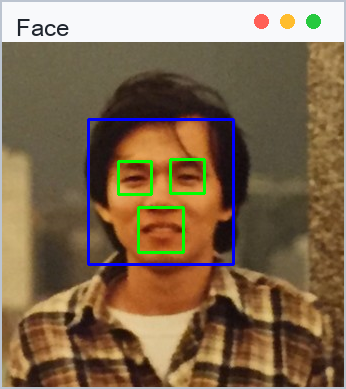
人脸以蓝色框住，眼睛以绿色框住。
上述设定 minNeighbors = 3 时，左边检测口部也被当作眼睛处理，如果改为 minNeighbors = 7 则可以得到右边的结果。另外也可以设定 maxSize 参数，让大于特定的区块抛弃。
程式实例 ch27_12.py：设定 minNeighbors = 7
# ch27_12.py
import cv2
pictPath1 = r'C:\opencv\data\haarcascade_frontalface_default.xml'
pictPath2 = r'C:\opencv\data\haarcascade_eye.xml'
face_cascade = cv2.CascadeClassifier(pictPath1)
eyes_cascade = cv2.CascadeClassifier(pictPath2)
img = cv2.imread("jk.jpg")
faces = face_cascade.detectMultiScale(img, scaleFactor=1.1,
minNeighbors = 3, minSize=(20,20))
eyes = eyes_cascade.detectMultiScale(img, scaleFactor=1.1,
minNeighbors = 7, minSize=(20,20))
for (x,y,w,h) in faces:
cv2.rectangle(img, (x,y), (x+w,y+h),(255,0,0),2)
for (x,y,w,h) in eyes:
cv2.rectangle(img, (x,y), (x+w,y+h), (0,255,0),2)
cv2.imshow("Face", img)
cv2.waitKey(0)
cv2.destroyAllWindows()
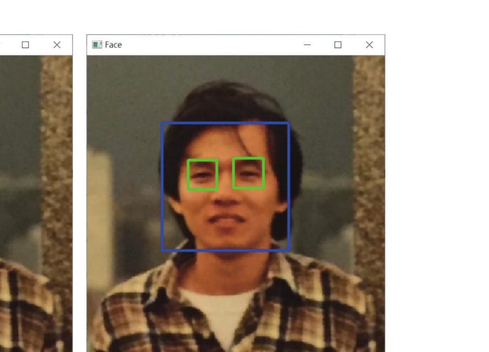
调整 minNeighbors 后可减少错误眼睛框。
27-7-3 侦测左眼与右眼的实例
程式实例 ch27_13.py：使用 haarcascade_lefteye_2splits.xml
# ch27_13.py
import cv2
pictPath1 = r'C:\opencv\data\haarcascade_frontalface_default.xml'
pictPath2 = r'C:\opencv\data\haarcascade_lefteye_2splits.xml'
face_cascade = cv2.CascadeClassifier(pictPath1) # 建立人脸物件
img = cv2.imread("jk.jpg") # 读取图像
gray = cv2.cvtColor(img, cv2.COLOR_BGR2GRAY)
faces = face_cascade.detectMultiScale(img, scaleFactor=1.1,
minNeighbors = 3, minSize=(20,20))
eyes_cascade = cv2.CascadeClassifier(pictPath2) # 建立左眼物件
eyes = eyes_cascade.detectMultiScale(img, scaleFactor=1.1,
minNeighbors = 7, minSize=(20,20))
for (x,y,w,h) in faces:
cv2.rectangle(img, (x,y), (x+w,y+h),(255,0,0),2) # 蓝色框住人脸
for (x,y,w,h) in eyes:
cv2.rectangle(img, (x,y), (x+w,y+h), (0,255,0),2) # 绿色框住眼睛
cv2.imshow("Face", img)
cv2.waitKey(0)
cv2.destroyAllWindows()
程式实例 ch27_14.py：使用 haarcascade_righteye_2splits.xml
# ch27_14.py
import cv2
pictPath1 = r'C:\opencv\data\haarcascade_frontalface_default.xml'
pictPath2 = r'C:\opencv\data\haarcascade_righteye_2splits.xml'
face_cascade = cv2.CascadeClassifier(pictPath1)
img = cv2.imread("jk.jpg")
faces = face_cascade.detectMultiScale(img, scaleFactor=1.1,
minNeighbors = 3, minSize=(20,20))
eyes_cascade = cv2.CascadeClassifier(pictPath2)
eyes = eyes_cascade.detectMultiScale(img, scaleFactor=1.1,
minNeighbors = 7, minSize=(20,20))
for (x,y,w,h) in faces:
cv2.rectangle(img, (x,y), (x+w,y+h),(255,0,0),2)
for (x,y,w,h) in eyes:
cv2.rectangle(img, (x,y), (x+w,y+h), (0,255,0),2)
cv2.imshow("Face", img)
cv2.waitKey(0)
cv2.destroyAllWindows()
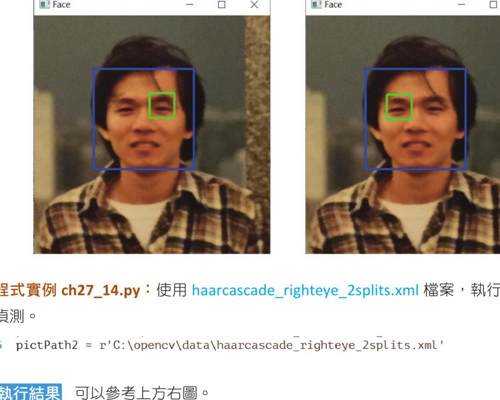
左图与右图分别示范左眼、右眼分类器的侦测结果。
27-8
侦测猫脸
在分类器资源档中与正面猫脸分类有关的档案如下：
haarcascade_frontalcatface.xml
笔者在测试过程也发现猫脸必须正面面向镜头，比较容易侦测到。
程式实例 ch27_15.py：侦测猫脸的应用
# ch27_15.py
import cv2
pictPath = r'C:\opencv\data\haarcascade_frontalcatface.xml'
cat_cascade = cv2.CascadeClassifier(pictPath) # 建立辨识物件
img = cv2.imread("cat1.jpg") # 读取图像
faces = cat_cascade.detectMultiScale(img, scaleFactor=1.1,
minNeighbors = 3, minSize=(20,20))
# 将猫脸框起来，由于有可能找到好几个脸所以用回圈绘出来
for (x,y,w,h) in faces:
cv2.rectangle(img, (x,y), (x+w,y+h),(255,0,0),2) # 蓝色框住猫脸
cv2.imshow("Face", img) # 显示图像
cv2.waitKey(0)
cv2.destroyAllWindows()
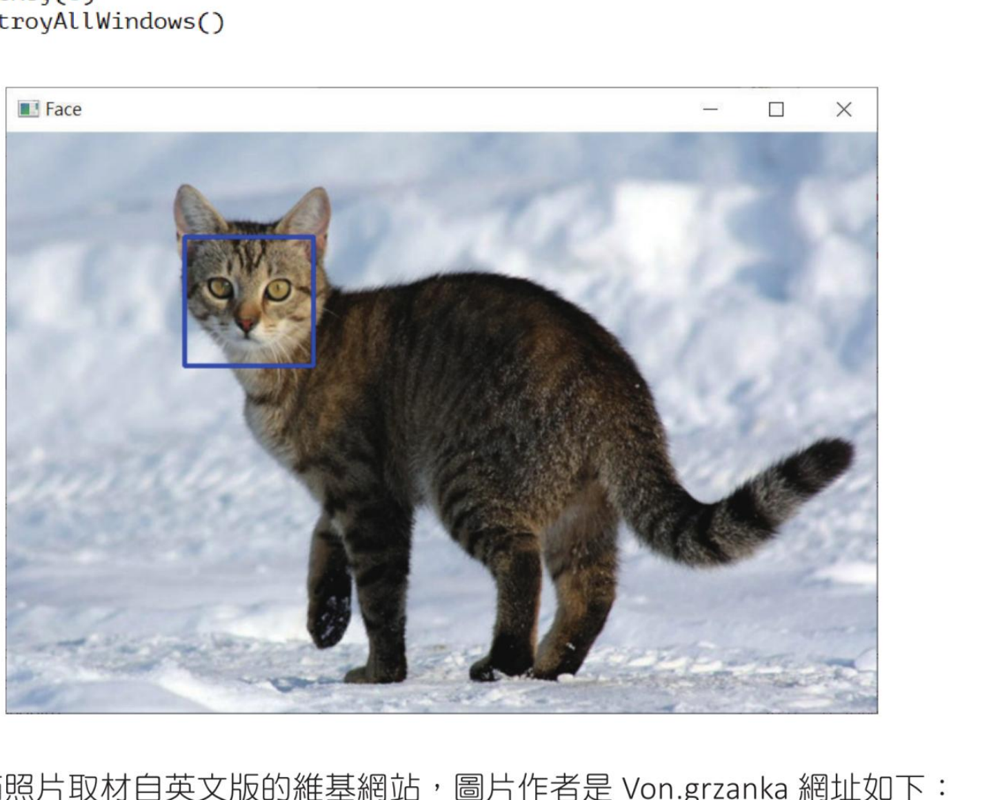
猫照片取材自英文版维基网站，图片作者是 Von.grzanka。
程式实例 ch27_16.py：侦测多数猫的图像
# ch27_16.py
import cv2
pictPath = r'C:\opencv\data\haarcascade_frontalcatface.xml'
cat_cascade = cv2.CascadeClassifier(pictPath) # 建立辨识物件
img = cv2.imread("cat2.jpg") # 读取图像
faces = cat_cascade.detectMultiScale(img, scaleFactor=1.1,
minNeighbors = 9, minSize=(20,20))
for (x,y,w,h) in faces:
cv2.rectangle(img, (x,y), (x+w,y+h),(255,0,0),2)
cv2.imshow("Face", img)
cv2.waitKey(0)
cv2.destroyAllWindows()
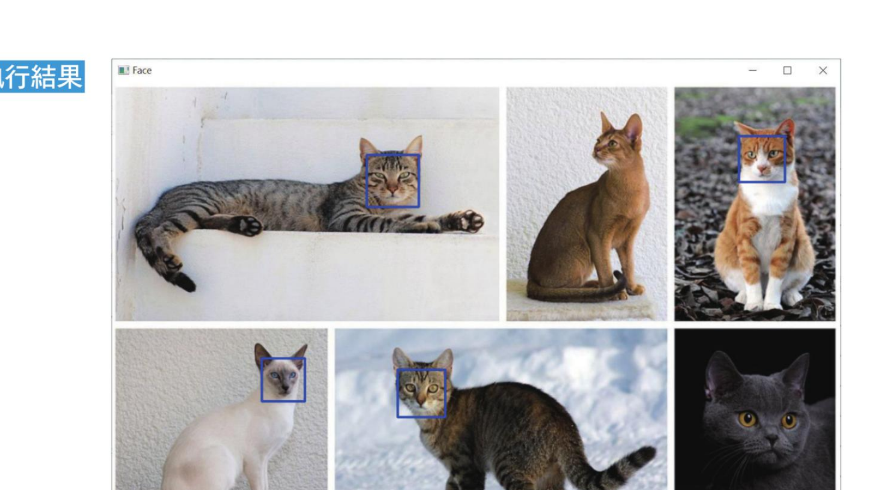
第 8 列设定 minNeighbors = 9，如果保持原先的 3，则会有非猫脸产生。
27-9
俄罗斯车牌辨识
在分类器资源档中与俄罗斯车牌分类有关的档案如下：
haarcascade_russian_plate_number.xml
笔者在测试过程发现台湾车牌几乎无法辨识，为了测试此车牌辨识，笔者自行参考不同格式的俄罗斯车牌设计了俄罗斯车牌，的确可以正常辨识。笔者将在第 30 章讲解自行设计哈尔（Haar）分类器档案，侦测台湾的车牌辨识。
程式实例 ch27_17.py：侦测台湾车牌，结果无法辨识
# ch27_17.py
import cv2
pictPath = r'C:\opencv\data\haarcascade_russian_plate_number.xml'
car_cascade = cv2.CascadeClassifier(pictPath) # 建立辨识物件
img = cv2.imread("car.jpg") # 读取图像
plates = car_cascade.detectMultiScale(img, scaleFactor=1.1,
minNeighbors = 3, minSize=(20,20))
# 将车牌框起来，由于有可能找到好几个脸所以用回圈绘出来
for (x,y,w,h) in plates:
cv2.rectangle(img, (x,y),(x+w,y+h),(255,0,0),2) # 蓝色框住车牌
cv2.imshow("Car Plate", img) # 显示图像
cv2.waitKey(0)
cv2.destroyAllWindows()
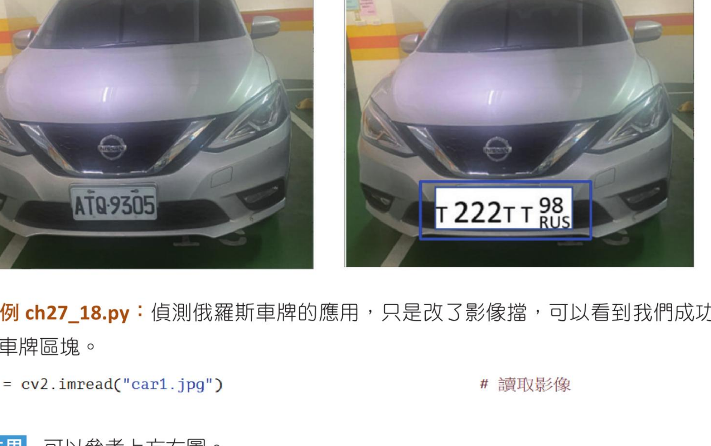
台湾车牌几乎无法辨识；改用俄罗斯车牌格式后可侦测到车牌区块。
程式实例 ch27_18.py：侦测俄罗斯车牌的应用
# ch27_18.py
import cv2
pictPath = r'C:\opencv\data\haarcascade_russian_plate_number.xml'
car_cascade = cv2.CascadeClassifier(pictPath) # 建立辨识物件
img = cv2.imread("car1.jpg") # 读取图像
plates = car_cascade.detectMultiScale(img, scaleFactor=1.1,
minNeighbors = 3, minSize=(20,20))
for (x,y,w,h) in plates:
cv2.rectangle(img, (x,y),(x+w,y+h),(255,0,0),2)
cv2.imshow("Car Plate", img)
cv2.waitKey(0)
cv2.destroyAllWindows()
程式实例 ch27_19.py：更改另一种俄罗斯车牌格式
# ch27_19.py
import cv2
pictPath = r'C:\opencv\data\haarcascade_russian_plate_number.xml'
car_cascade = cv2.CascadeClassifier(pictPath) # 建立辨识物件
img = cv2.imread("car2.jpg") # 读取图像
plates = car_cascade.detectMultiScale(img, scaleFactor=1.1,
minNeighbors = 3, minSize=(20,20))
for (x,y,w,h) in plates:
cv2.rectangle(img, (x,y),(x+w,y+h),(255,0,0),2)
cv2.imshow("Car Plate", img)
cv2.waitKey(0)
cv2.destroyAllWindows()
1. 请使用 g4.jpg 图像执行人脸辨识，你可能会获得有瑕疵的结果，请输出此图像。
2. 请自行调整上述实例程式，让辨识成功。
3. 请使用 dogcat.jpg 图像辨识猫脸，请自行设计与调整参数，请调整到可以辨识 2 只猫脸。
4. 请调整上述范例可以辨识 4 个猫脸。
5. 整合 ch27_6_1.py 和 ch27_6_2.py，使用 s_1927.jpg 让图中所有科学家可以被辨识。